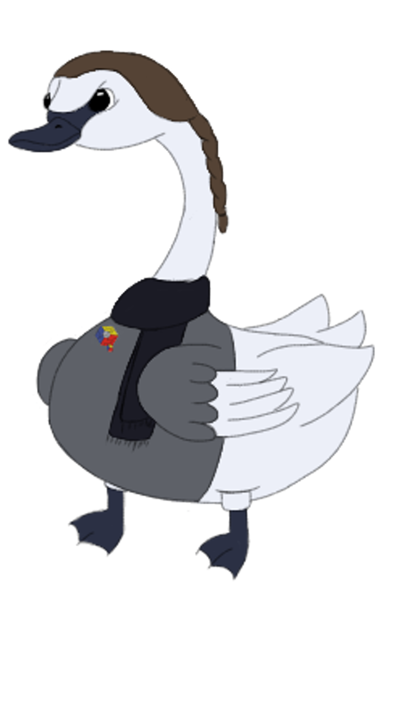
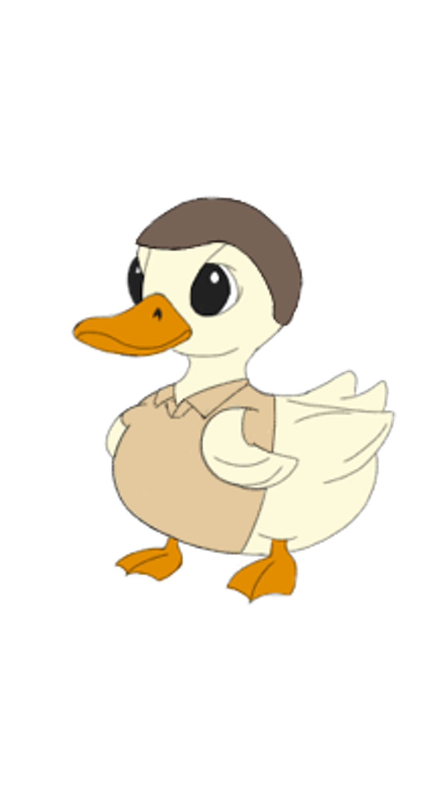
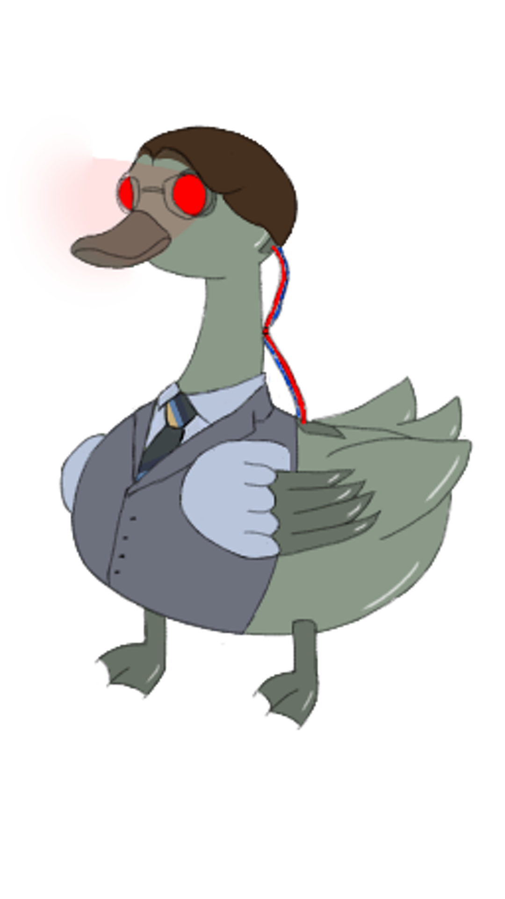
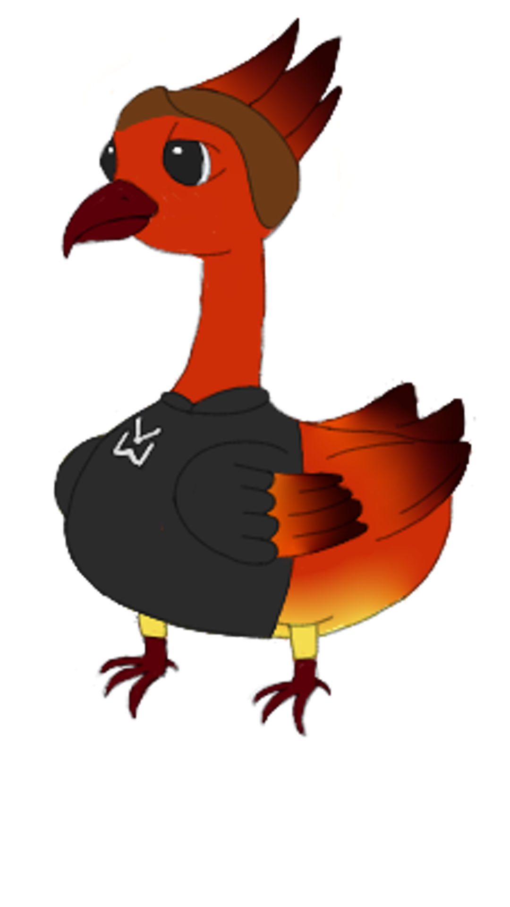

Venant d’une famille d’informaticiens, et de nature très curieuse, elle a été introduite tôt à la programmation. Passionnée de jeux vidéo et de canards, et artiste à ses heures perdues, elle réunit ses passions dans cette entreprise, où elle met en pratique ses techniques et son imagination sans limite dans la création du jeu.


Passionné par l'informatique, domaine qui stimule sa curiosité et sa soif d'apprendre. Toujours prêt à s'investir pleinement, il met toute son énergie et son engagement dans chaque projet qu'il entreprend. Curieux de découvrir de nouvelles technologies, il explore sans cesse de nouvelles idées pour élargir ses compétences.


Depuis son plus jeune âge, Elouan est passionné de jeux vidéo et d'histoires en tous genres. Il a découvert l'informatique pendant la période du COVID, domaine qui l'a tout de suite intéressé. Ce projet lui permet donc d'allier ses passions, afin de créer le monde d'Hogu, doté de canards dont les ailes se transforment en lance-missiles.


Arthur, passionné de cybersécurité et de red teaming, a découvert ces domaines pendant la période du COVID, ce qui l'a conduit à maîtriser les aspects techniques du développement du jeu. Pour la faire court il fait en sorte que le jeu fonctionne.Son intérêt pour l'intelligence artificielle l'a poussé à intégrer cette technologie dans le jeu, en optimisant les comportements des personnages. Grâce à ses qualités de leader et à ses soft-skills, il a su fédérer une équipe autour d'une vision claire, tout en favorisant la collaboration et l'innovation.